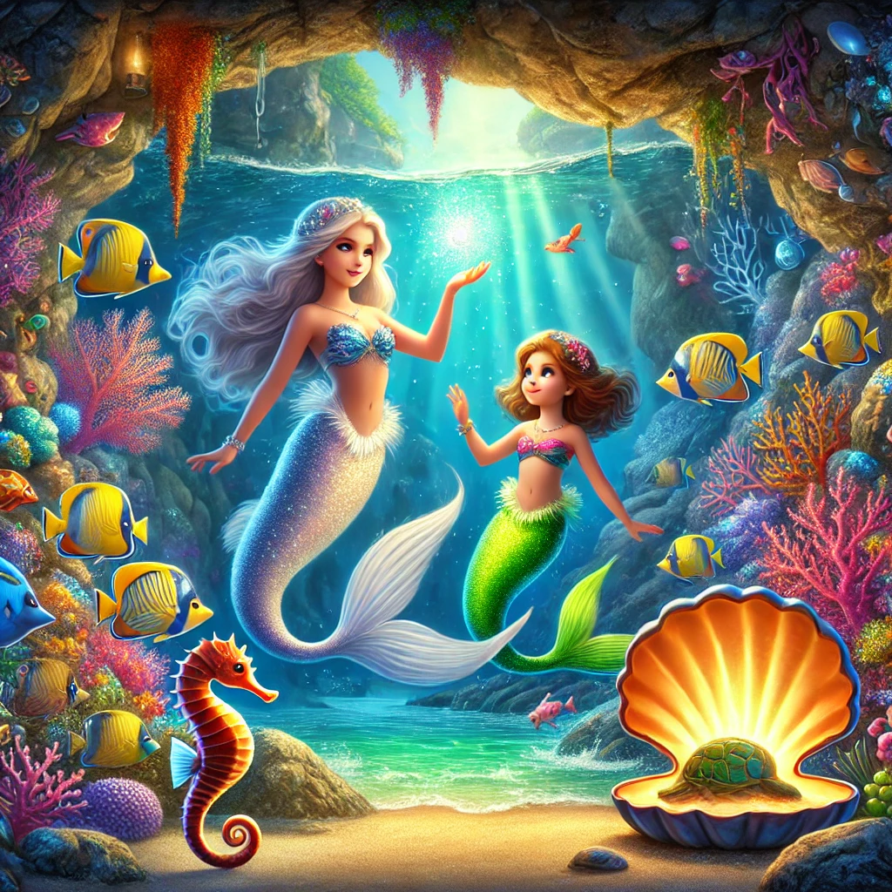

Aventuras en el Fondo del Mar

Había una vez, en un pequeño pueblo costero, una niña llamada Elena. Elena amaba el mar más que cualquier otra cosa en el mundo. Cada día, después de la escuela, corría a la playa y pasaba horas observando las olas y los peces nadando cerca de la orilla. Su mayor deseo era poder nadar entre los peces y descubrir los secretos del océano.
Un día, mientras exploraba las rocas cerca de la playa, Elena encontró una caracola brillante. Al acercársela al oído, escuchó una suave voz que le dijo: "Elena, si realmente deseas nadar con los peces, sigue el brillo de esta caracola hasta el anochecer."
Intrigada y emocionada, Elena esperó hasta que el sol comenzara a ponerse. La caracola emitió un suave brillo que la guió hacia una cueva oculta entre las rocas. Con valentía, Elena entró en la cueva y, al final del túnel, encontró una piscina de agua cristalina.
De repente, la voz de la caracola se hizo más fuerte y una sirena apareció ante ella. La sirena tenía un cabello largo y ondulado y una cola que brillaba con los colores del arcoíris. "Soy Marina, la guardiana del océano," dijo la sirena. "He escuchado tu deseo y estoy aquí para concedértelo."
Marina agitó su cola y un polvo mágico rodeó a Elena. En un abrir y cerrar de ojos, Elena se transformó en una sirena, con una hermosa cola plateada que brillaba bajo la luz de la luna. Con alegría, Elena se sumergió en el agua y comenzó a nadar.
Elena siguió a Marina hacia el fondo del mar, donde descubrió un mundo lleno de maravillas. Nadó junto a peces de colores, caballitos de mar y tortugas marinas. Exploró arrecifes de coral llenos de vida y jugó entre los jardines de algas. Todo era tan hermoso y mágico, exactamente como lo había soñado.
Durante su aventura, Elena hizo muchos amigos marinos y aprendió sobre la importancia de proteger el océano y sus habitantes. Marina le mostró cómo las criaturas del mar vivían en armonía y cómo cada ser tenía un papel importante en mantener el equilibrio del ecosistema.
Al final del día, Marina llevó a Elena de regreso a la cueva. Aunque estaba triste por tener que dejar el mar, Elena sabía que siempre llevaría consigo los recuerdos de su increíble aventura. Marina le prometió que siempre sería bienvenida en el océano y que, cuando quisiera regresar, solo tendría que encontrar la caracola brillante.
De vuelta en la playa, Elena observó el mar con una nueva apreciación y amor por sus profundidades. Aunque ahora era una niña nuevamente, sabía que su corazón siempre pertenecería al océano y que algún día volvería a nadar con los peces.
Y colorín colorado, este cuento se ha acabado. Buenas noches, Alondra. ¡Dulces sueños!